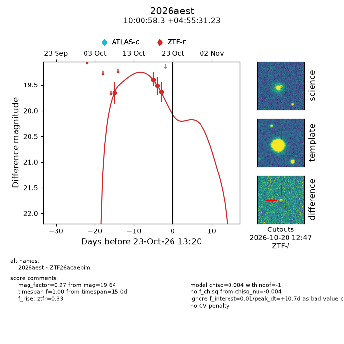
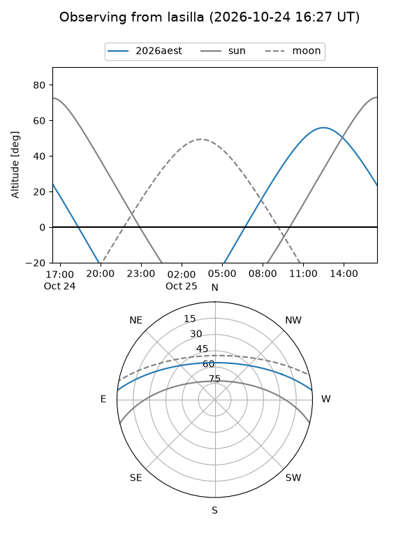
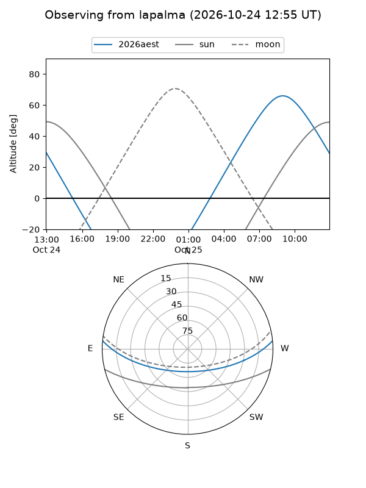
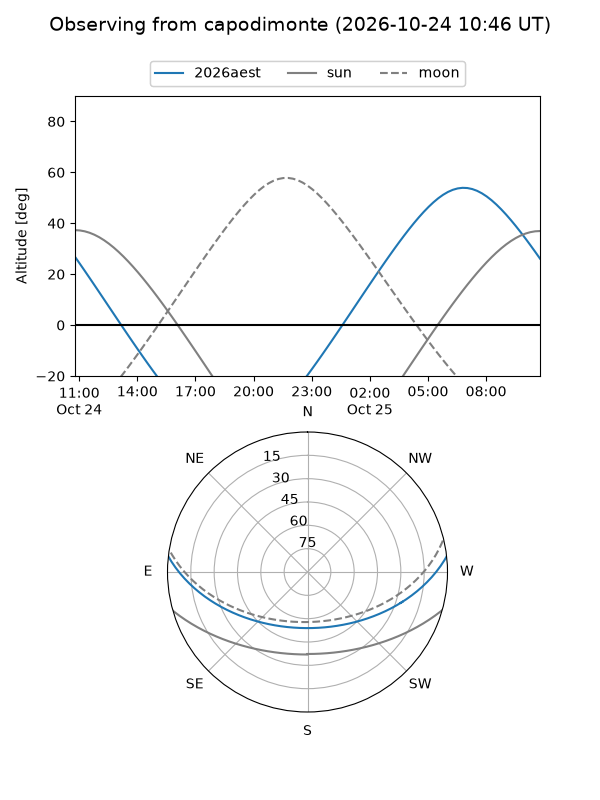
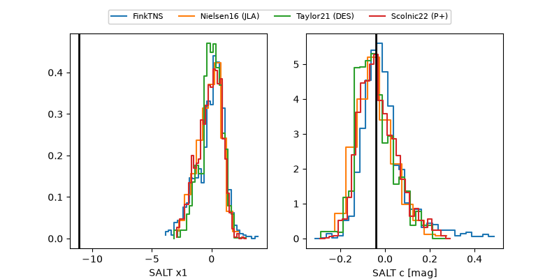

2026aest
Target 2026aest at 2026-10-23 13:22
Aliases and brokers:
FINK-ZTF: ztf.fink-portal.org/ZTF26acaepim
Lasair-ZTF: lasair-ztf.lsst.ac.uk/objects/ZTF26acaepim
ALeRCE-ZTF: alerce.online/object/ZTF26acaepim
YSE-PZ: ziggy.ucolick.org/yse/transient_detail/2026aest
TNS name: wis-tns.org/object/2026aest
Direct TNS query: direct search
alt names
ZTF26acaepim (ztf,fink_ztf)
2026aest (tns,yse)
Coordinates:
equatorial (ra, dec) = 150.2429,+4.92534
equatorial (HMS+DMS) = 10:00:58.30,+04:55:31.23
galactic (l, b) = (233.8547,+43.76282)
Flags:
peak dt: +10.7
Photometry:
last ztfr=19.64
4 ztfr detections
Lightcurve

Visibility



Additional plots
